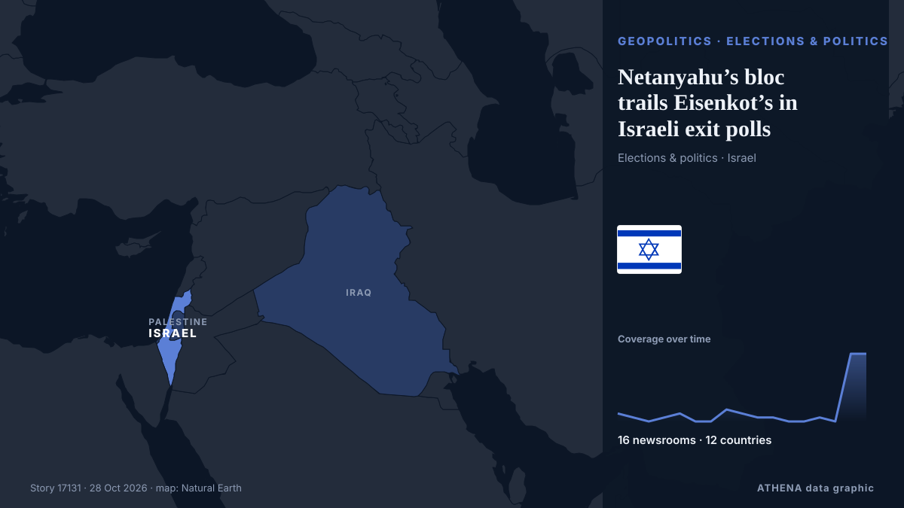

Netanyahu’s bloc trails Eisenkot’s in Israeli exit polls

Eisenkot's bloc leads in 3 of 4 exit polls, but neither major bloc secures 61 seats needed for a parliamentary majority. von Anadolu Agency (English)
Unabhängig gemeldet von 16 Medien in 12 Ländern seit dem 19. Okt., zuerst von Haaretz (English); die Berichterstattung ist abgeklungen. ATHENA stuft das Risiko als niedrig ein (1.4/10), vor allem wegen der Schwere des beschriebenen Schadens und seiner geografischen und sektoralen Reichweite. Die Konfidenz liegt bei 88 % (hoch): 16 Medien bestätigen es unabhängig, bei einer mittleren Verlässlichkeit der Quellen von 77 %. Wer berichtete: 17 Medien in Israel, 7 Medien in Türkei · Turkey, 2 Medien in Vereinigte Staaten · United States. Die Berichterstattung lief von 19. Okt. bis 28. Okt., über 196 Stunden.
Warum es wichtig ist: Sicherheits- und diplomatische Entwicklungen können Bündnisse, Handel und Märkte weit über die direkt beteiligten Länder hinaus verschieben.
Was sich geändert hat: 34 neue Berichte von 15 Redaktionen in den 24 Stunden bis 28. Okt..
Erste Schlagzeile: Israel Election Night: How the exit polls, results unfolded amid political deadlock
Schlagzeilen werden auf Englisch angezeigt, wie veröffentlicht.
Auf einen Blick
Ausgewählt, bewertet und geschrieben nach der veröffentlichten Methodik von ATHENA. Kein Redakteur greift in einzelne Ereignisse ein. So entsteht ATHENA ›
| 19 Oct 20:54 UTC | 2 |
|---|---|
| 20 Oct 08:54 UTC | 1 |
| 20 Oct 20:54 UTC | 0 |
| 21 Oct 08:54 UTC | 1 |
| 21 Oct 20:54 UTC | 2 |
| 22 Oct 08:54 UTC | 0 |
| 22 Oct 20:54 UTC | 0 |
| 23 Oct 08:54 UTC | 3 |
| 23 Oct 20:54 UTC | 2 |
| 24 Oct 08:54 UTC | 1 |
| 24 Oct 20:54 UTC | 1 |
| 25 Oct 08:54 UTC | 0 |
| 25 Oct 20:54 UTC | 0 |
| 26 Oct 08:54 UTC | 1 |
| 26 Oct 20:54 UTC | 0 |
| 27 Oct 08:54 UTC | 17 |
| 27 Oct 20:54 UTC | 17 |
| 22 Oct 07:05 UTC | 0.0 |
|---|---|
| 27 Oct 20:21 UTC | 2.1 |
| 27 Oct 20:51 UTC | 1.7 |
| 28 Oct 00:25 UTC | 3.0 |
| 28 Oct 08:27 UTC | 1.5 |
| 28 Oct 08:27 UTC | 1.4 |
Warum diese Zahlen
Bedeutung
Risiko
Konfidenz
Die Berichterstattung – wer berichtete, und wann
Schlagzeile wie veröffentlicht · öffnet das Original- Haaretz (English) · IsraelEisenkot bloc leads Netanyahu in two new polls, but falls short of a majority without Arab parties
- Haaretz (English) · IsraelFar-right party head says Netanyahu, Smotrich met with his rabbi to help push him out of race
- Haaretz (English) · IsraelBoth blocs agree: Netanyahu will push party of far-right rival Ofer Winter below electoral threshold
- The Jerusalem Post · IsraelEisenkot leads Netanyahu as Winter, Hendel-Zelekha may not cross electoral threshold - poll
- Haaretz (English) · IsraelNew polls show Eisenkot ahead, two parties at edge of electoral threshold
- The Jerusalem Post · IsraelNetanyahu bloc falls to 48 seats as opposition reaches 54, days before election - poll
- Anadolu Agency (English) · Türkei · TurkeyPoll shows Netanyahu’s bloc losing 3 seats as opposition leads with 54 to 48 ahead of Israeli elections
- Haaretz (English) · IsraelLast polls before Israel's election put Eisenkot ahead of Netanyahu as both lack majority
- Anadolu Agency (English) · Türkei · TurkeyNetanyahu bloc trailing opposition with projected 50 seats to 52 in final Israeli election polls
- Haaretz (English) · IsraelThe latest election stories from the past day
- Türkiye Today · Türkei · TurkeyFinal Israeli election polls leave Netanyahu bloc stuck at 50 seats, short of majority
- The Jerusalem Post · IsraelEisenkot leads Netanyahu but deadlock looms, election polls show two days before Israelis vote
- Anadolu Agency (English) · Türkei · TurkeyIsrael votes Tuesday in closely contested election as Netanyahu faces challenge from Eisenkot
- Middle East Eye · INTPolls open as Netanyahu fights to retain power
- Haaretz (English) · IsraelElection exit polls: Majority of voters back opposition, but Netanyahu's Likud emerges as largest party
- Middle East Eye · INTExit polls show Eisenkot-led bloc ahead of Netanyahu’s, gains for Palestinian-led parties
- Middle East Eye · INTIsraeli exit polls show huge Palestinian gains block Netanyahu from forming government
- Fox News (World) · Vereinigte Staaten · United StatesNetanyahu gains overnight as Israel election heads toward political deadlock
- The Jerusalem Post · IsraelIsrael Election Night: How the exit polls, results unfolded amid political deadlock
- Middle East Eye · INTIsraeli exit polls show huge Palestinian gains block Netanyahu and Eisenkot from forming majority
- The Jerusalem Post · IsraelHaredi parties Shas, UTJ set to win 14 combined seats in 2026 Israeli election
- The Jerusalem Post · IsraelPeople of Israel, Reservists-Economic, Haredi Public fall short of threshold in Israeli election
- Middle East Eye · INTNetanyahu’s Likud party is projected to have won the most seats of any single party, report says
- Anadolu Agency (English) · Türkei · TurkeyNetanyahu’s bloc trails Eisenkot’s in Israeli exit polls
- Foreign Policy · Vereinigte Staaten · United StatesDramatic Changes Are Unlikely in Israel, Even if Netanyahu Is Ousted
- Arab News · Saudi-Arabien · Saudi ArabiaFirst Israeli election exit polls show narrow edge for opposition
- Shafaq News (English) · Irak · IraqIsrael exit polls show Likud leading, no majority
- TASS (English) · Russland · RussiaNetanyahu’s party is first in Israel’s elections, but opposition bloc winning more seats
- Dawn · PakistanNetanyahu scrambles for votes as Israelis turn out in record numbers
- Haaretz (English) · IsraelEisenkot urges Israel to avoid second election, warns Netanyahu against exploiting war for political gain
- Haaretz (English) · IsraelEisenkot vows to 'build Zionist, pro-IDF enlistment government' after exit polls
- Greek City Times · Griechenland · GreeceIsrael Election: Exit Polls Put Netanyahu’s Likud First but No Bloc Wins a Majority
- Haaretz (English) · IsraelThere is only one way Eisenkot can ensure victory
- Haaretz (English) · IsraelLiberal U.S. Jewish groups hail Israeli exit polls as rebuke to Netanyahu
- Gulf News · Vereinigte Arabische Emirate · United Arab Emirates‘We won’: Eisenkot claims ‘complete victory’ in Israeli elections as exit polls show Netanyahu’s bloc collapsing — but no bloc has a 61-seat majority yet
- The Rio Times · Brasilien · BrazilIsrael Exit Polls Leave Netanyahu Short
- Anadolu Agency (English) · Türkei · TurkeyArab party leader seeks 61-seat majority with Israeli opposition to oust Netanyahu
- Gulf News · Vereinigte Arabische Emirate · United Arab EmiratesIsraeli elections: Who is Gadi Eisenkot? The general challenging Netanyahu — and facing a coalition test
- Anadolu Agency (English) · Türkei · TurkeyRevised Israeli exit polls put Netanyahu’s bloc and opposition at 51 seats each
- Middle East Eye · INTNetanyahu's bloc overtakes Eisenkot's, as Palestinian-led parties rise to 19 seats